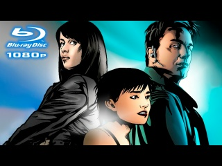
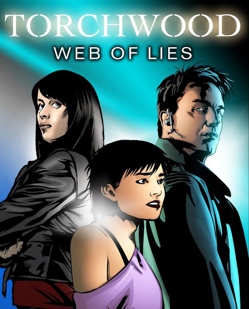

* DVO PARUSSKI

Web of Lies
анимационный мини-сериал в стиле "motion comics"
8 июля - 10 сентября 2011
Формат: 10 серий по 2-3 минуты (живой комикс)
| Варианты озвучек: | * Разные: смотрите по инструкции * DVO PARUSSKI |
|---|---|
| Скачивание и просмотр: |
В молодого человека стреляют в 2011 году в Лос—Анджелесе, но он не умирает - это День чуда. Когда выясняется, что он знал о грядущем Чуде, его сестра, Холли Мокри, берется за работу, чтобы выяснить, что ему было известно и почему его заставили замолчать. Сможет ли она разобраться в этом до того, как кто-то решит заставить ее замолчать в следующий раз?
Еще в 2007 году Гвен Купер видела, как Джека Харкнесса похитили во время миссии. Кто это сделал и почему они, кажется, экспериментируют с тем, как они убивают Джека? И как это связано с событиями, происходящими в будущем ...?
